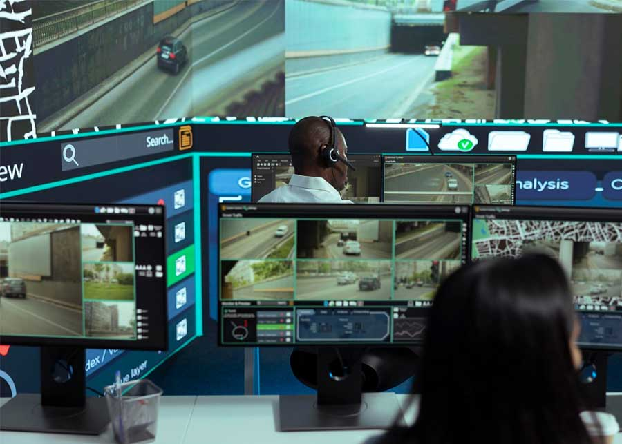

خدمات حلول المراقبة التلفزيونية المغلقة (CCTV) الحديثة – شركة مجال للشبكات والأمن وتقنية المعلومات
في بيئة الأعمال الحالية، تعد أنظمة المراقبة التلفزيونية الذكية والفعالة خط الدفاع الأول لحماية المنشآت والأصول والموظفين. تقدم شركة مجال حلول مراقبة أمنية متكاملة مصممة خصيصاً للشركات والمجمعات السكنية والمصانع والمؤسسات الكبرى عبر المملكة العربية السعودية، مع الالتزام بأعلى معايير الدقة والاعتمادية التشغيلية.
تعتمد حلولنا للمراقبة التلفزيونية المغلقة (CCTV) على أحدث أنظمة الكاميرات، بما في ذلك كاميرات الشبكة (IP)، وكاميرات PTZ عالية السرعة (التي تتيح التحكم في الاتجاه والتقريب)، وكاميرات القبة (Dome) غير البارزة، وكاميرات الأسطوانة (Bullet) المتينة، والكاميرات الحرارية المتخصصة. ومن خلال دمج هذه المستشعرات عالية الدقة مع أجهزة تسجيل الفيديو الشبكي (NVR) المركزية وبرمجيات الإدارة الذكية، فإننا نتيح إمكانية المراقبة الفورية والتخزين بسعات كبيرة. وتتيح أنظمتنا لأصحاب الأعمال ومسؤولي الأمن الوصول الآمن إلى لقطات حية ومسجلة عالية الجودة عبر أي جهاز ومن أي مكان في العالم، وذلك من خلال اتصال سحابي مشفّر.
القدرات الجوهرية لحلول شركة مجال لأنظمة المراقبة التلفزيونية (CCTV)
نقوم بإعداد وتجهيز أنظمة المراقبة التلفزيونية (CCTV) لتتوافق مع الإرشادات الأمنية المحلية الصادرة عن الهيئة العليا للأمن الصناعي (HCIS) والجهات التنظيمية الأخرى في المملكة العربية السعودية. وتشمل القدرات الرئيسية للنظام ما يلي:
-
كاميرات بدقة 4K
-
تحليلات الفيديو
-
تتبع الحركة (PTZ)
-
التخزين المركزي
-
المراقبة عن بُعد
-
بنية كابلات متينة وعالية الجودة
أداء تحليلات المراقبة
تستخدم أنظمتنا تحليلات متقدمة تعتمد على الذكاء الاصطناعي لرصد الحالات الشاذة، وقراءة لوحات المركبات، وحساب أعداد الزوار. ويساهم ذلك بشكل كبير في الحد من الإنذارات الكاذبة وأتمتة عمليات المراقبة الروتينية، مما يتيح لرجال الأمن الاستجابة السريعة فقط عند وقوع حوادث فعلية.
الأسئلة الشائعة
تضع الهيئة العليا للأمن الصناعي (HCIS) لوائح صارمة لأنظمة الأمن في المملكة العربية السعودية، لا سيما للبنية التحتية الحيوية والمواقع الصناعية والمنشآت التجارية. وتتوافق تصميمات كاميرات المراقبة لدينا تمامًا مع إرشادات الهيئة العليا للأمن الصناعي فيما يتعلق بدقة الكاميرا ومعدل الإطارات وفترات الاحتفاظ بالتسجيلات.
تختلف فترات الاحتفاظ باختلاف اللوائح المحلية واحتياجات العملاء. بالنسبة للشركات العادية، تتراوح مدة التخزين عادةً بين 31 و90 يومًا. أما القطاعات الصناعية الحيوية التي تتطلب موافقة إدارة أمن المعلومات الصحية، فتتطلب عادةً تخزين التسجيلات بشكل متواصل لمدة تتراوح بين 90 و180 يومًا.
نعم. جميع تركيباتنا مزودة بوحدات تزويد طاقة غير منقطعة (UPS) ومحولات طاقة عبر الإيثرنت (PoE) مع أنظمة بطاريات احتياطية لضمان استمرار التشغيل والتسجيل أثناء انقطاع التيار الكهربائي.